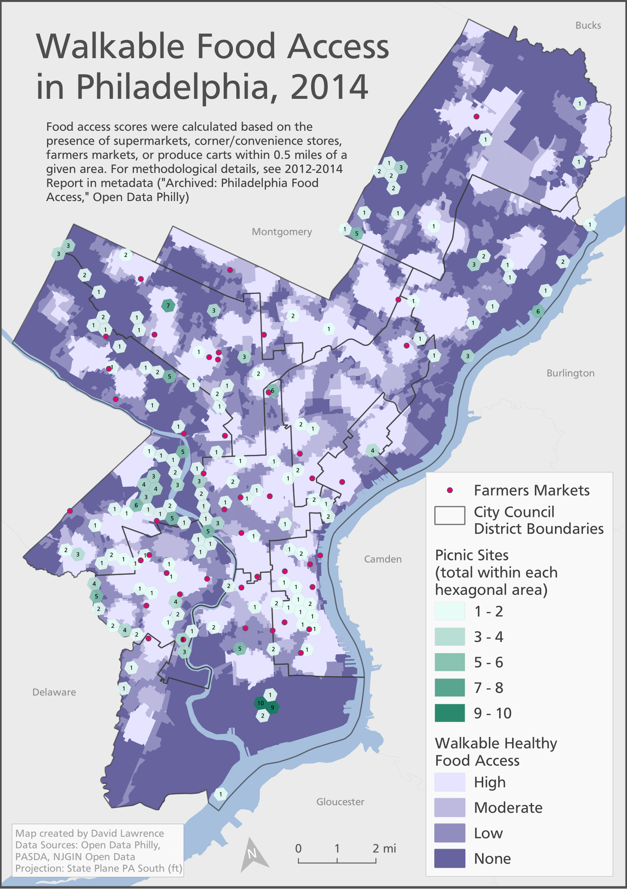

Walkable Food Access in Philadelphia
This map shows walkable food access, farmer's markets, picnic sites, and City Council districts from Open Data Philly. To display the picnic sites, I calculated the number of picnic site points within each hexagonal area.
Additional background data: counties from PA Open Data and NJGIN Open Data, and hydrology from Open Data Philly.

View the map in PDF form here.